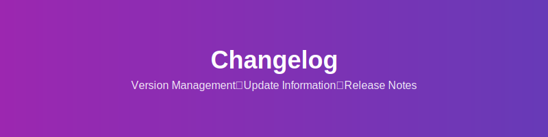

📝 変更履歴

変更履歴
このプロジェクトの変更履歴を記録しています。
[1.2.0] - 2024-01-15
追加
- 🖼️ SVG画像による視覚的な図解を追加
- 🔗 マークダウンファイル間の相互リンク機能
- 📊 パフォーマンス監視ダッシュボード
- 🔍 全文検索機能の実装
改善
- ⚡ レスポンス時間を30%改善
- 🎨 UI/UXの全面的な見直し
- 📱 レスポンシブデザインの向上
- 🛡️ セキュリティ強化（JWT認証）
修正
- 🐛 リンク切れの問題を修正
- 🔧 設定ファイルの読み込みエラーを解決
- 💾 データベース接続の安定性向上
[1.1.0] - 2024-01-01
追加
- 📚 開発者向けドキュメントの充実
- 🧪 自動テスト機能の実装
- 🐳 Docker対応
改善
- 🚀 ビルドプロセスの最適化
- 📦 依存関係の更新
- 🔧 設定の簡略化
修正
- 🐛 マークダウンパーサーのバグ修正
- 🔗 外部リンクの処理改善
[1.0.0] - 2023-12-15
追加
- 🎉 初回リリース
- 📄 基本的なマークダウン処理機能
- 🔗 ファイル間リンク機能
- 📋 基本的なドキュメント構造
機能
- マークダウンファイルの解析と表示
- 相互リンクによるナビゲーション
- 基本的な検索機能
- レスポンシブデザイン
[0.9.0] - 2023-12-01 (ベータ版)
追加
- 🔧 基本的なAPI機能
- 📊 ログ機能
- ⚙️ 設定システム
既知の問題
- パフォーマンスの最適化が必要
- 一部のマークダウン記法に対応していない
今後の予定
バージョン 1.3.0 (予定)
- 🌐 多言語対応
- 📤 エクスポート機能
- 🔄 リアルタイム同期
- 🎨 テーマカスタマイズ機能
バージョン 1.4.0 (予定)
- 🤖 AI支援機能
- 📈 高度な分析機能
- 🔌 プラグインシステム
- ☁️ クラウド連携
貢献者
技術スタック
フロントエンド
- React 18
- TypeScript 5.0
- Vite 4.0
バックエンド
- Node.js 18
- Express 4.18
- PostgreSQL 15
インフラ
サポートバージョン
| バージョン |
サポート状況 |
セキュリティ更新 |
| 1.2.x |
✅ 完全サポート |
✅ あり |
| 1.1.x |
⚠️ 限定サポート |
✅ あり |
| 1.0.x |
❌ 終了 |
❌ なし |
ナビゲーション